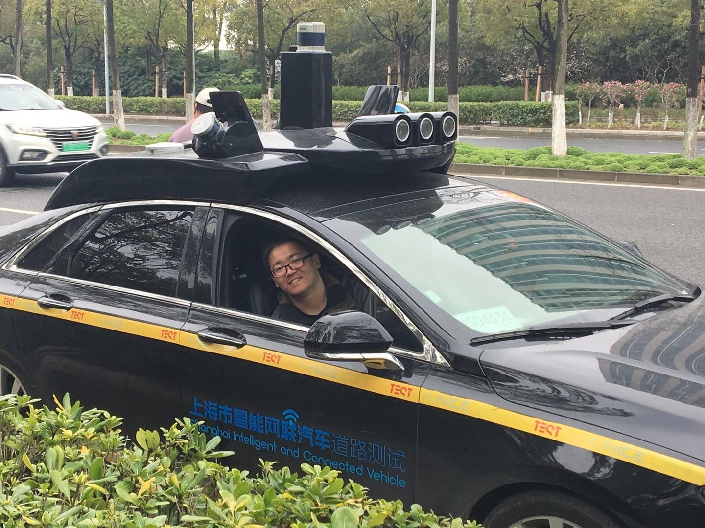

Xiaoyu Wang(read as "shall you won" in English)Ph.D. Student
Biological System Engineering CV Github |
 |
I am a Ph.D. student (2023-) at the Biological System Engineering of University of Wisconsin-Madison advised by Prof. Zhou Zhang. Prior to Ph.D. study, I received my Bachelor's degree (2017-2021) at the Xi'an Jiaotong University where I was advised by Prof. Jinsong Han and Jinjun Wang.
My current and previous research interests include Remote sensing(yield prediction), Audio(speech separation), Robotics(sensor calibration and fusion), Computer vision(semantic segmentation) and Security in deep learning(adversarial example, GAN and federated learning).
Ph.D University of Wisconsin-Madison, Biological System Engineering, 2023.1 ~
B.S. Xi'an Jiaotong University, Computer Science and Technology, 2017 ~ 2021
Microsoft Research Asia, Media Computing Group, 2021.4 ~ 2022.4, supervised by Xiangyu Kong and Xiulian Peng
Intership, research on audio front-end processing
Sensetime , Autonomous driving Group, 2020.9 ~ 2021.3, supervised by Tao Ma and Yikang Li
Intership, working on autonomous driving
Nanyang Technological University , 2020.9 ~ 2021.3, supervised by Tao Bai and Jun Zhao
Remote Intership, research on federated learning and adversarial learning
INNNO , 2019.9 ~ 2020.2
Intership, working on semantic segmentation project
Xi'an Jiaotong University , 2018 ~ 2020, supervised by Jinsong Han and Jinjun Wang
Research Assistant, research on GAN, federated learning and privacy project 1 project 2